"After we started with the Mobius project, Jake's grades are 10/10."
"Edu loves the amazing range of games Mobius have".
"Sophie now wants to be a maths teacher."
Watson uses IBM's DeepQA software and the Apache UIMA (Unstructured Information Management Architecture) framework implementation. The artificial intelligence was written Java, C++, and Prolog, and runs on the SUSE Linux Enterprise Server 11 operating system using the Apache Hadoop framework to provide distributed computing. The system is workload-optimized, integrating massively parallel POWER7 processors and built on IBM's DeepQA technology. Watson employs a cluster of ninety IBM Power 750 servers, each of which uses a 3.5 GHz POWER7 eight-core processor, with four threads per core.
In total, the system has 2,880 POWER7 processor threads and 16 terabytes of RAM. Watson can process 500 gigabytes, the equivalent of a million books, per second. The AI was initially developed to answer questions on the quiz show Jeopardy! In 2011, it won the first place prize of $1 million while competing against champions Brad Rutter and Ken Jennings (IBM Watson, 2020).
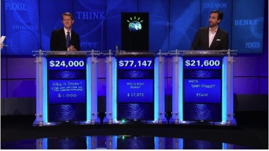IBM’s Watson winning American game show Jeapordy (IBM,2020)
To use IBM’s AI Watson, I signed up for a free IBM Cloud Account and took a short IBM course on Coursera. To create a virtual assistant that has natural language processing, I used IBM’s Watson Assistant. I created an assistant named Mobius (Mobi).
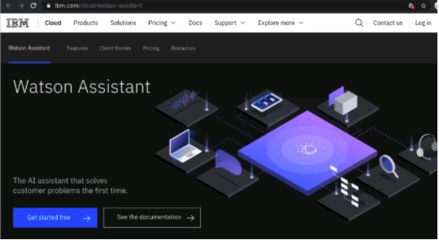IBM Watson Assistant on IBM Cloud (Watson Assistant, 2020).
A chatbot is made from 3 main parts; Intent, Entities and Dialog. These parts help the user and chatbot create conversations that have a natural and organic feel. Watson Assistant comes with premade intents, or you can create your own individual ones.
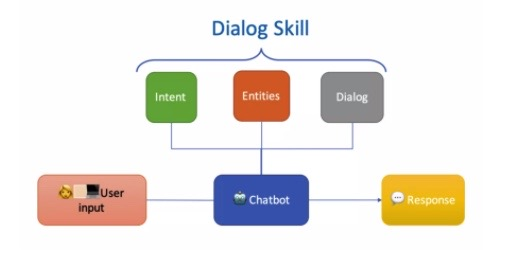The core of Watson Assistant include Intent, Entities and Dialog (Watson Assistant, 2020).
I will be using premade and custom-made intents. Intents are a collection of user statements that have the same meaning. For example, when a user greets the chatbot, these words will be written down under the intent #greeting_us (intents are prefixed with the hash/pound sign).
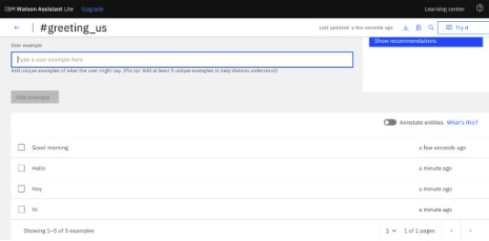Creating the #greeting_us intent.(Watson Assistant, 2020)
Users will most probably say Hello, Hey, Hi, G’day, Kia Ora (New Zealand greeting) so these words are provided to Watson. When the user says “Hi,” Mobi will understand the user is greeting it and respond in kind. By creating intents, I can train Mobi the virtual assistant to understand the variety of ways users will speak to it.
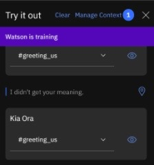Watson in training – learning Kia Ora.(Watson Assistant, 2020)
I repeated the process for a variety of intents such as #thank_you, #good_bye, #General_Jokes, #Geometry, #General_Human_or_Bot, #products.
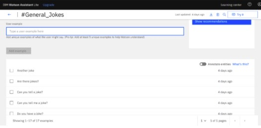Creating the #General_Jokes intent.(Watson Assistant, 2020)
Next I made an entity. Entities represent information in the user input that is relevant to the user's purpose. If intents represent verbs (the action a user wants to do), entities represent nouns (the object of, or the context for, that action). Recognizing entities in the user's input helps you to craft more useful, targeted responses. I made an entity to recognise the word Pi. Whenever someone enters a sentence about Pi, it responds with a particular answer about Pi.
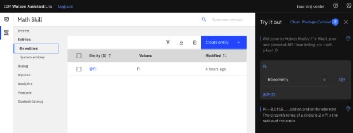Creating the @Pi entity and testing it.
I linked the entity with the geometry intent from the user. So if a user asks a question about squares, Watson will not respond with an answer about Pi.
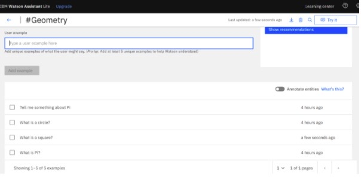The #Geometry intent. (Watson Assistant, 2020)
However, if the user asks “What is Pi?” or “Tell me a fact about circles,” (I made circles a synonym of Pi – you can make synonyms while creating entities), it will respond with a specific answer about Pi.
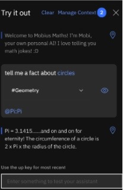Testing the @Pi entity. (Watson Assistant, 2020)
In order for the user and chatbot to have a conversation, answers to the intents need to be placed in Dialog nodes. Every chatbot has two default dialogs: Welcome and Anything else. The Welcome dialog is the greeting that displays when the user starts the chatbot. Anything else is used as the default response, which is typically some variation of “Sorry, I didn’t understand that.”
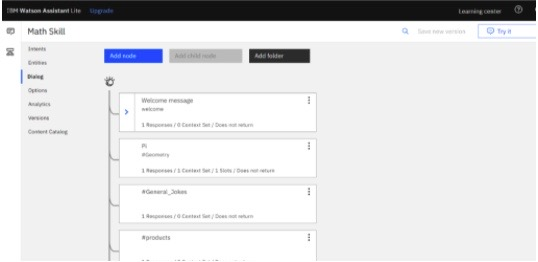The Dialog nodes. (Watson Assistant, 2020)
To get started, I changed the Welcome dialog message to something befitting a maths AI. Mobi is designed for children, so this prototype is mainly a joke telling chatbot.
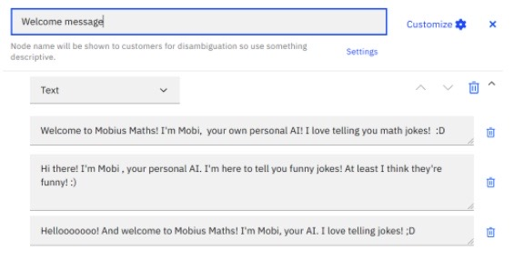Creating Mobi’s welcome message (Watson Assistant, 2020).
I then repeated the process for all the Dialog nodes so that the user will get a response for their enquiries. I created several nodes and child nodes. These nodes work in a similar fashion to if,else statements in programming. For intents with a multiple set answers, I set Watson to ‘random,’ so the user will receive an answer at random.
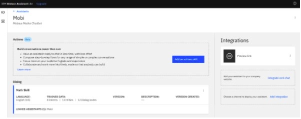Mobi the virtual assistant. (Watson Assistant, 2020).
Lastly, I linked the IBM Watson Assistant to a prototype website. Mobi
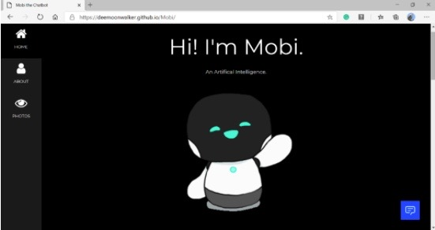Mobi’s website. (GitHub Pages, 2020).
I achieved this by linking a piece of HTML provided by IBM to my prototype website’s HTML.
Any updates made to Mobi on IBM’s Cloud is automatically updated on the website. I used GitHub Pages to create a website. This required me to upload the HTML and images to a GitHub repository and link it to a GitHub Page.
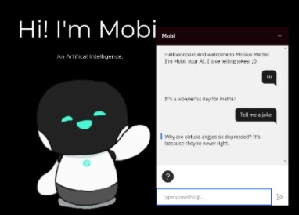Chatting with Mobi. (GitHub Pages, 2020).
Through the development of each intent, entity and dialog, I tested Watson Assistant through a ‘Try it out’ tab on the screen. Through these testings, I could re-train Watson and continue to edit and refine Mobi.
IBM Cloud have scheduled planned maintenance of their core infrastructure at varying times, and there have been reports of errors in Watson Assistant. However, these are temporary and fixed quickly, as the assistant is used in professional settings such as banking, online shopping and education. The IBM course to learn how to use Watson Assistant was easy to understand and well curated. However, the further Watson Assistant courses include Python coding, making them much more complicated.

When kids feel able to accomplish things using maths, it increases their confidence.
Learn while you have fun playing games, asking questions to a chatbot.
Having a better understanding of maths, kids can have better grades at school.
Request a call back.
Contact us